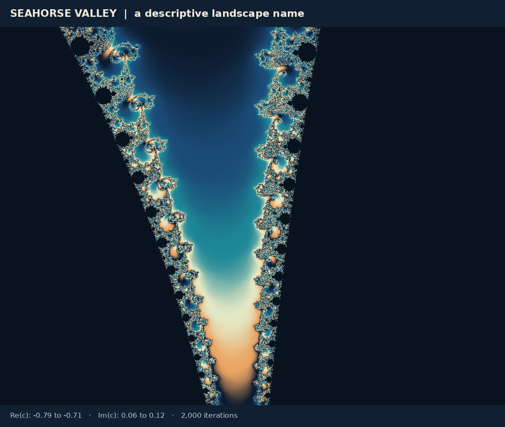

A guided tour of the Mandelbrot set
Twelve places worth visiting, from the cusp of the main cardioid around the upper half of the set and out along the real axis to its tip at −2. Each picture is computed in your browser when you reach it; click it to explore the same window in the zoom viewer.
The route
The map shows where the stops are. Names such as seahorse valley and elephant valley are nicknames for regions with a recognizable look; they have no precise boundaries. A place is identified precisely by its parameter c, by what the orbit of 0 does there, by the components around it, and by the external rays that land on it, and each stop below says what is known about these.
The colors outside the set count the steps an orbit needs to escape; the boundaries between the bands approximate equipotentials. Color can stress or hide a motif, but it is not part of the set.
1. The cusp at 1/4
The heart-shaped main cardioid ends on the right in a cusp at c = 1/4. There the fixed point 1/2 has multiplier exactly 1: it is parabolic, with a single petal, and the orbit of 0 creeps toward it, about 1/k away after k steps. Its Julia set is the “cauliflower”, a name from Douady’s repertoire. Only one external ray, at angle 0, lands at the cusp. Just to the right of it the orbit of 0 escapes, but only after about π/√ε steps at c = 1/4 + ε: the parabolic gate. Open in the zoom viewer.
2. Elephant valley
Above and below the cusp, small bulbs line the edge of the cardioid: the bulbs with internal angles 1/q and (q − 1)/q, with period q, crowding toward 1/4 as q grows. With their decorations they look like a row of elephants, each with a trunk curling into a spiral. In this window the elephant at the upper left is the bulb with internal angle 1/15 and period 15, whose root is at about 0.2895 + 0.0176i. Open in the zoom viewer.
3. A three-way branch point
At the top of the set is the limb of the 1/3 bulb, the bulb of Douady’s rabbit. Its main antenna splits into three at c ≈ −0.1011 + 0.9563i. This is a Misiurewicz point: the orbit of 0 lands after four steps on the fixed point α, which repels. Three parameter rays land there, at 9/56, 11/56 and 15/56, one between each pair of branches; three doublings take these angles to 2/7, 4/7 and 1/7, the angles of the rays that land at α in every Julia set of the 1/3 wake (where parameter rays land). Open in the zoom viewer.
4. The tip at i
One branch from the previous stop leads to c = i, the tip of one of its filaments. The orbit of 0 is 0, i, −1 + i, −i, −1 + i, …: after two steps it lands on a repelling two-cycle with multiplier 4 + 4i. Only one ray lands here, at 1/6, so i is the tip of a filament. Zooming in by 4√2 and turning by 45° reproduces the picture more and more exactly, and it resembles the Julia set for c = i, a dendrite, near its critical value (Tan Lei’s theorem). Open in the zoom viewer.
5. A copy off the axis
Higher up in the same limb sits a small copy of the whole set. Its main cardioid has period 4, with center ≈ −0.1565 + 1.0322i and its cusp at ≈ −0.1547 + 1.0310i, where the rays at 1/5 and 4/15 land. It is a primitive copy: its cardioid is not attached to a larger component. At its center the orbit of 0 returns to 0 every four steps, and near the center the fourth iterate behaves like a quadratic map, which is why the whole shape reappears (minibrots). Open in the zoom viewer.
6. Seahorse valley


Between the main cardioid and the period-two disk, above the point −3/4 where they touch, runs a narrow valley whose decorations curl like seahorse tails; MathWorld’s entry for the name cites Peitgen and Richter’s The Beauty of Fractals (1986). Its right side is lined with bulbs of the main cardioid whose internal angles are just below 1/2, such as 15/31 with period 31; its left side with bulbs of the period-two disk with small internal angles, such as 1/15 with period 30. Farther down the valley the periods grow, and so does the time orbits need to escape: straight above −3/4, at c = −3/4 + εi, the orbit of 0 needs about π/ε steps to leave, 3,143 for ε = 0.001. Open in the zoom viewer.
7. A seahorse up close
Magnified, each decoration of the valley turns into a spiral. Spirals are what self-similarity looks like when magnifying also turns the picture: if zooming in by some factor and turning by an angle reproduces the picture, repeated zooms trace a spiral. At a Misiurewicz point the factor and the angle come from the multiplier of its repelling cycle, as at c = i, where the turn is 45°. The zoom viewer’s last example dives into such spirals down to a width of 2 × 10−9. Open in the zoom viewer.
8. The golden-mean point
Along the edge of the main cardioid between the 1/3 bulb and seahorse valley lies the point with internal angle (3 − √5)/2 ≈ 0.382, at c ≈ −0.3905 + 0.5868i. No bulb is attached there: the bulbs with internal angles 1/3, 2/5, 3/8, 5/13, …, whose periods are the Fibonacci numbers, approach it from alternating sides (periodicity). Its fixed point turns by the angle (3 − √5)/2, a close relative of the golden mean, and is surrounded by a Siegel disk, the mirror image of the one described in the chapter on neutral cycles. Open in the zoom viewer.
9. The Feigenbaum point
Following the real axis to the left, the components of periods 2, 4, 8, 16, … come ever closer together, each smaller than the one before by a factor that approaches 4.669 (the first factor is about 4.23), and accumulate at c ≈ −1.401155, the Feigenbaum point (universality). There the orbit of 0 is attracted to no cycle at all; the map is infinitely renormalizable, and the Mandelbrot set is locally connected at this point, as Dzmitry Dudko and Mikhail Lyubich proved only recently (preprint 2023, published 2026; special points). Open in the zoom viewer.
10. Where two bands merge
Beyond the Feigenbaum point the real axis enters the chaotic range of the bifurcation diagram. At c ≈ −1.5437 its two chaotic bands merge into one. This is a Misiurewicz point: the orbit of 0 lands after three steps on the fixed point ≈ −0.8393, and two rays land there, at 5/12 and 7/12, one from above and one from below. Open in the zoom viewer.
11. The airplane’s copy
The largest small copy on the real axis has period 3: its main cardioid has center ≈ −1.7549, where the orbit of 0 returns to 0 every three steps and the Julia set is known as the airplane, and its cusp at exactly −7/4, where the rays at 3/7 and 4/7 land. It is the period-three window of the bifurcation diagram, and a whole copy of the Mandelbrot set, with its own cascade and its own seahorse valleys (minibrots). Open in the zoom viewer.
12. The tip at −2
The set ends on the left at c = −2, where the orbit of 0 is 0, −2, 2, 2, …: it lands on the repelling fixed point 2 after two steps. One ray lands here, at 1/2. The Julia set is the segment [−2, 2], and near −2 the Mandelbrot set looks more and more like a segment too. The largest copy in this window has period 4, with its cusp at about −1.9406, where the rays at 7/15 and 8/15 land; smaller copies, of periods 5, 6, 7, …, lie ever closer to the tip. Open in the zoom viewer.
Where to go from here
The gallery has the zoom viewer, with deeper examples, and the explorer, which draws the Julia set for any parameter. To read a place as these stops do, find its period or preperiod from the orbit of 0 (orbits), the components around it (periodicity), and the rays that land on it (rays).
Sources checked on 20 October 2026.